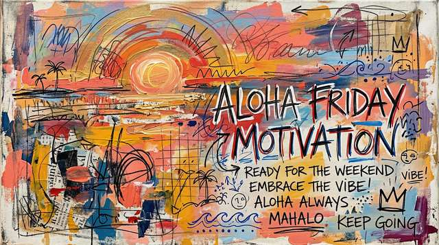
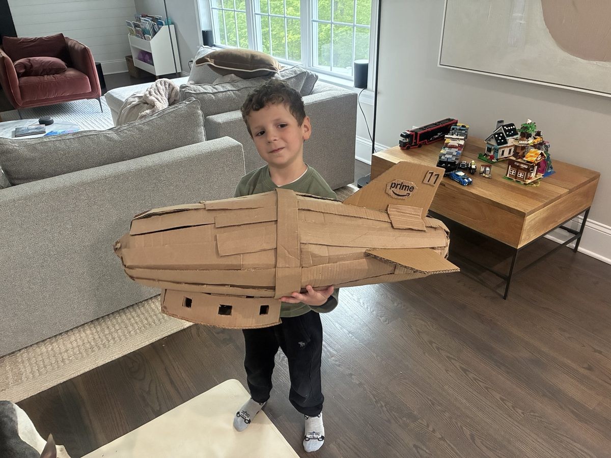
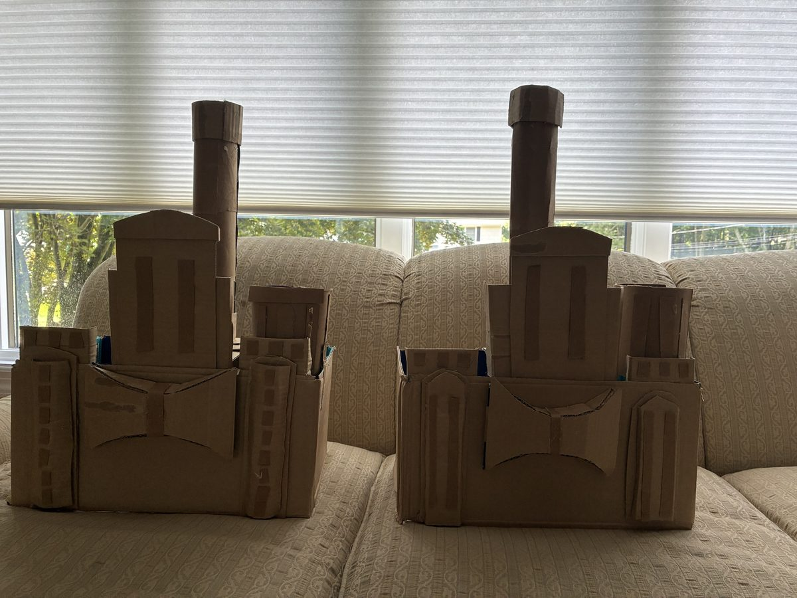
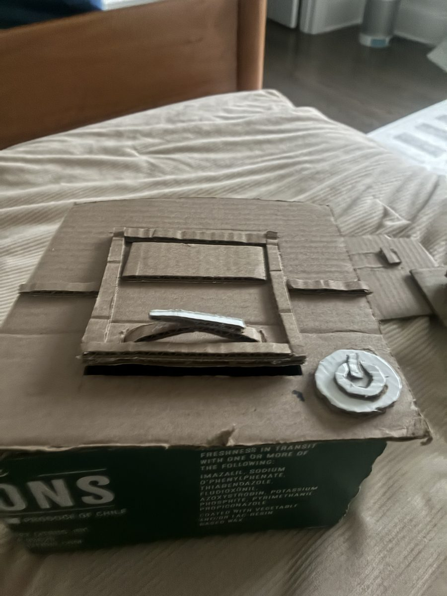
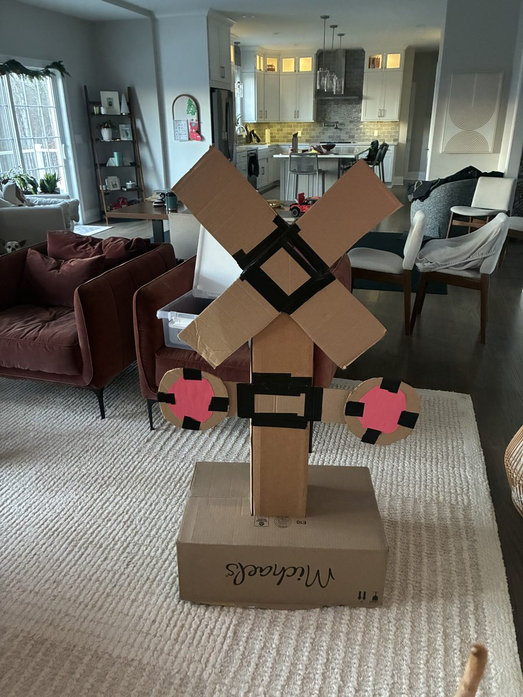
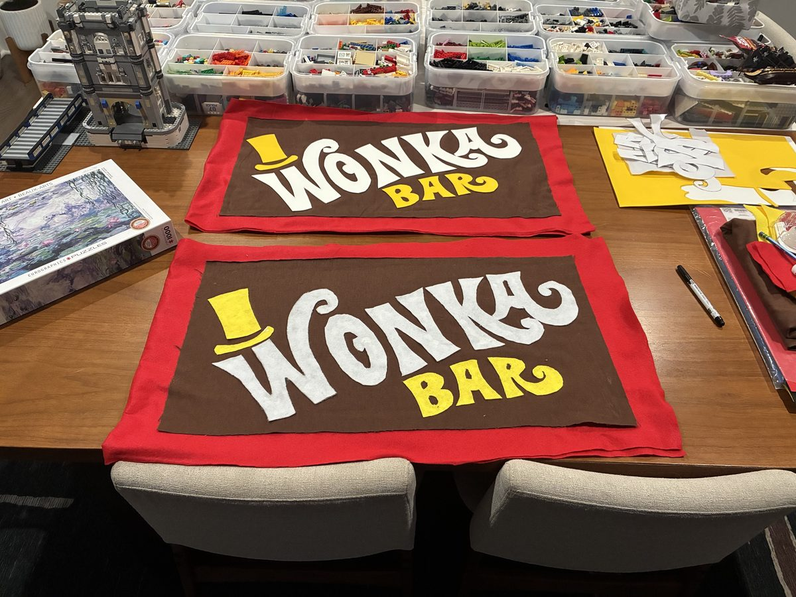
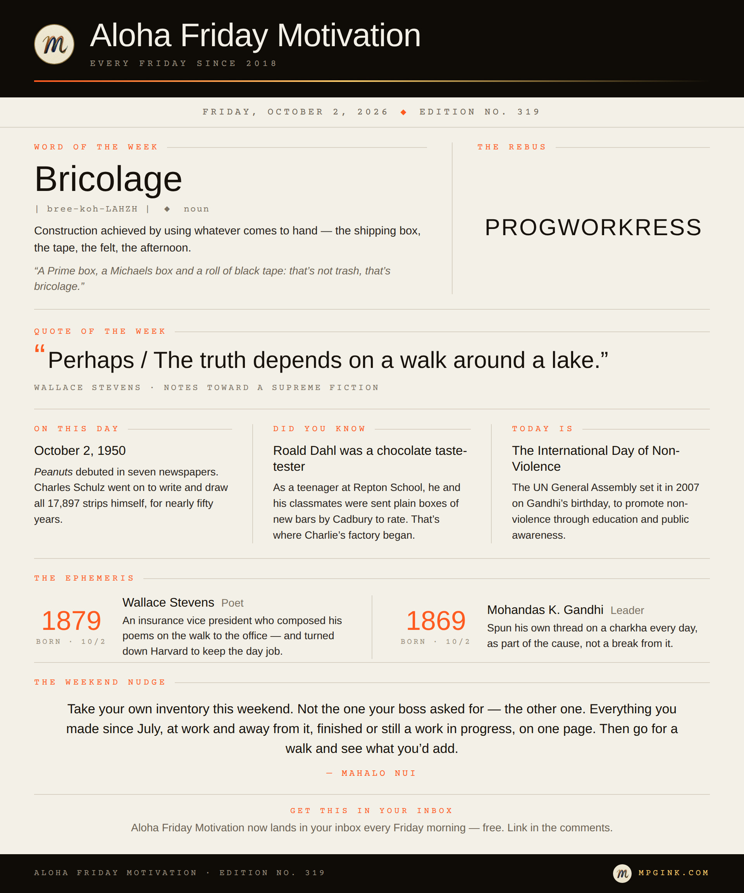

Happy Aloha Friday. 🌺
First, the shoutout: this one’s for the 319 — Cedar Rapids, Iowa City, Waterloo. Iowa City is the only UNESCO City of Literature in the United States, which is the right town to wave at in an edition about making things.
I’ve got Wonka on the brain lately. Blame my kids — they’re obsessed. Nightly printing sessions of every variation of the Wonka bar — I’ve gone through more ink than I can count. A rotating cycle of Wonka movies on repeat. The new Wonka challenge reality competition show.
Wonka is crazy. A little sordid, somewhat weird. Gene Wilder only took the role in the 1971 film on one condition: Willy’s first entrance would be a slow limp on a cane that turns into a somersault, so that from then on, nobody would know whether he was lying or telling the truth. Johnny Depp leaned all the way into the weird, with a Willy that quietly nods to Fear and Loathing. Timothée Chalamet went back to the beginning and played him young, broke and just starting out. Wilder’s Willy will always be mine: the instigator, the dreamer. But Chalamet’s sold me. Still, they all have a special place in my heart.
What all of them stir up in my house is the courage to dream, to build, to get your hands dirty (preferably in chocolate), and to step back and stop taking everything so seriously. Even when a factory guest falls into the chocolate river. Or turns into a blueberry. You get where I’m going with this.
So I was in full Wonka mode when Q3 closed on Wednesday. For most of us that means a spreadsheet: what we said we’d hit, what we hit, and the gap in between. I did that one. But this week I also ran a different count — not what I sold or shipped, but what I made. All of it, on the clock and off. Here’s the inventory.
Three apps. Phreezer came first — a Phish show-rating app where phans rate every song, track their show history, and on show nights rate the set live as the band plays it. Then One Percent, one lesson a day — 284 of them now — built on the idea that getting one percent better compounds. And Job Odyssey, a job-search platform that finds the roles, scores the fit, and keeps the pipeline honest.
Two books, written by my boys “with a little help from dad.” Arlo and the Million-Mile Truck and Ash and the Secret Language of Signs — the second one photographed on real walks around our own neighborhood.
A cardboard fleet. A blimp. Water towers. Windmills. A Roomba. An iRobot Braava jet. A Wonka factory — two, actually. I have two boys. You can never make just one of anything.




Six iterations of a fire alarm pull station, in LEGO.
Ten 1,000-piece puzzles, with a lot of help from my wife. The latest: The Starry Night.
And two costumes: Wonka Bars, obviously. Felt, every letter cut by hand.

I didn’t go looking for this next part. This is how these editions usually come together: I sat down to write about this list, and it turns out Wallace Stevens was born today, in 1879. Kismet.
By day, Stevens was a vice president at the Hartford Accident and Indemnity Company. He never learned to drive. Every morning he walked the two miles to the office and composed poems in his head on the way, matching the words to the rhythm of his steps. In 1955 Harvard offered him the Norton professorship — the kind of offer poets wait their whole lives for — and he turned it down, because taking it meant retiring from the insurance company. He won the Pulitzer that same year.
People still find that strange: the insurance man and the poet. I don’t. I went to school for philosophy and English, and I fancy myself a writer in some respects. I have a day job, and I’ve always carried a night job too. I used to spend long work drives writing lyrics in my head and memorizing them, so that if anybody ever asked, I could recite them.
Nobody is ever going to convince me I know what my actual job is — what I’m going to be when I grow up. And nobody will ever make me choose.
Gandhi was born today too, in 1869 — which is why today is the UN’s International Day of Non-Violence. He spun his own thread on a charkha, by hand, as a daily practice. And the most famous protest of the twentieth century was, when you get down to it, a walk: the Salt March, 240 miles to the sea in 1930. For him, the spinning was part of the cause, not a break from it.
So here is what my inventory taught me. The habit that turns a pile of shipping boxes into a blimp on a Saturday is the same one that ships an app feature on a Tuesday. It’s the same one that sits next to a kid and turns the street signs he already knows by heart into a book. I don’t get to keep one and lose the others — and I wouldn’t want to. Every one of them is still a work in progress, and that’s the point.
This week’s sign-off: Pure Imagination — Gene Wilder. “There is no life I know to compare with pure imagination.” For the two Wonka factories, the two Wonka Bars, and everybody who has looked at a cardboard box and seen something else.
Take your own inventory this weekend. Not the one your boss asked for — the other one. Everything you made since July, at work and away from it, finished or still a work in progress, on one page. Then go for a walk and see what you’d add.
Mahalo Nui. 🌺
— Matthew
